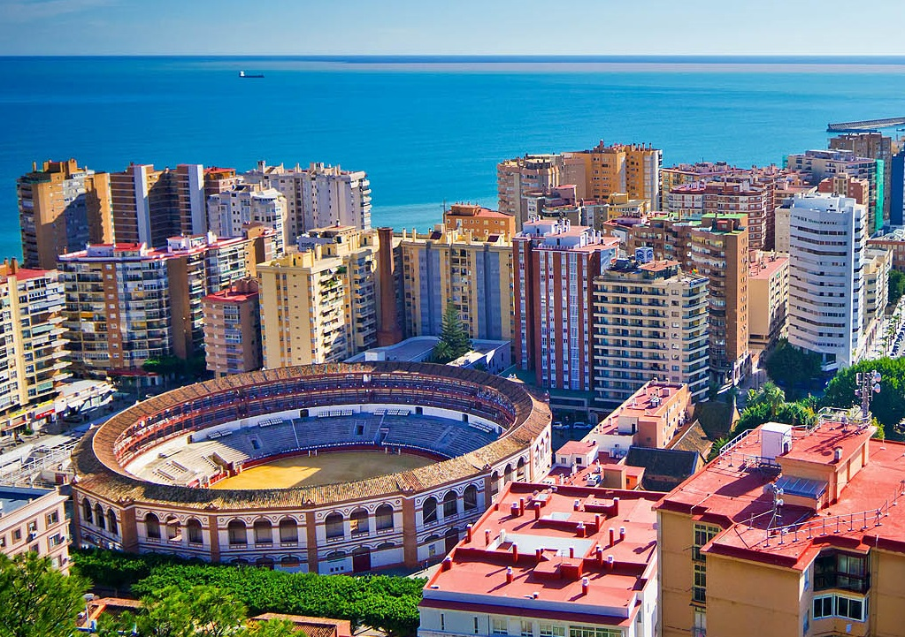
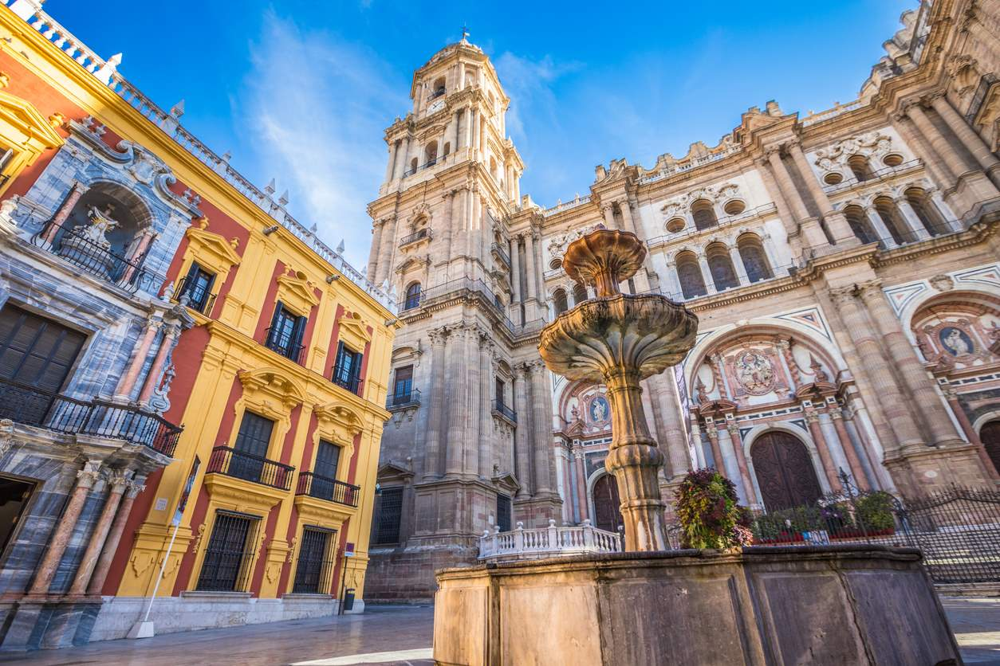
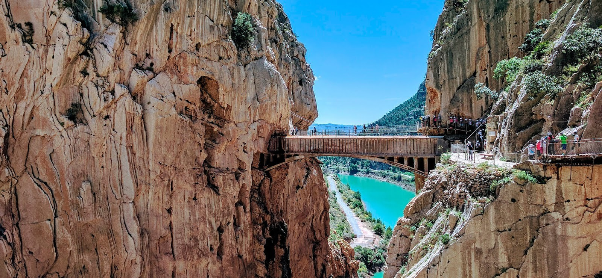
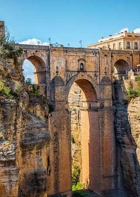
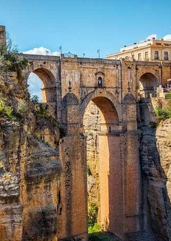

Málaga milenaria y cosmopolita en el pasado, conserva intactas sus raíces históricas. Si en
tiempos remotos fue testigo de los orígenes del hombre y de la cultura mediterránea, hoy convertida en
primera potencia de la industria turística andaluza, mantiene viva su tradición de tierra acogedora y
creativa.
Málaga marinera en su litoral donde nunca es invierno; de vocación serrana, tierra
adentro, donde la naturaleza se muestra en todo su esplendor. Pueblos blancos de hermosa arquitectura,
envueltos en románticas leyendas, ponen su punto de luz en los recónditos valles donde la vida discurre
plácidamente. Y desde la alta sierra la mirada abarca el horizonte hasta perderse en la inmensidad azul del
mar.
Sergio Martínez Félix
Costa del sol Costa de Golf
Bañada por el mar Mediterráneo, la Costa del Sol abarca más de 150 kilómetros de litoral con una media
de 325 días de sol al año
Entre el mar y la sierra discurre la historia de esta peculiar provincia, cuya capital fue testigo del
despegue económico y cultural del mediterráneo occidental. La Malaka fenicia se convirtió en un próspero
centro comercial. Tras la invasión musulmana del siglo VIII, su territorio se arabiza, se integra, más
tarde, en el reino nazarí de Granada y vive un nuevo periodo de apogeo comercial y cultural.
Usa las flechas de abajo para ver diferentes fotos de la provincia

La plaza de Toros “La Malagueta” fue inaugurada el 11 de junio de 1876 con una corrida en la que
lidió entre otros el mítico torero Rafael Molina “Lagartijo”.
Obra de Joaquín Rucoba, también autor del Mercado de Atarazanas, es de estilo neo mudéjar. Tiene
forma de hexadecágono, cómo se puede observar desde el mirador de Gibralfaro que ofrece unas
hermosas vistas al coso taurino. El ruedo mide 52 metros de diámetro y cuenta con 4 corrales, 10
chiqueros, caballerizas o enfermería, entre otras instalaciones. En la actualidad alberga el Museo
Taurino.
En el mes de agosto acoge su gran evento anual, la Feria Taurina, en la que se puede acceder a un
amplio programa de corridas con grandes figuras del toreo.
Destacar también la corrida Picassiana que se celebra en Semana Santa en la que los toreros lucen
trajes inspirados en el estilo, visión y formas del pintor malagueño.
Puedes conocer la ubicación de la Plaza de Toros "La Malagueta" pinchando en este link.

La peculiaridad que encontramos en la capital de la provincia de Málaga, es que sus monumentos más
singulares se concentran en la zona conocida como centro histórico. Iglesias, conventos y palacios
de gran valor cultural y artístico forman este conjunto de calles, la mayoría de ellas peatonales y
de aire moruno. Esto propicia un paseo agradable donde el ambiente de las terrazas de bares y
restaurantes se convierte en el gran protagonista.
Sin duda, la famosa Calle Larios es el eje central del casco histórico y la mayoría del resto de
calles desembocan aquí. Conforma el núcleo de la actividad social del barrio y es también punto de
referencia comercial y económica. Dedicada a los viandantes, cuenta con las más famosas y populares
tiendas de ropa y decoración, lo que resulta el lugar perfecto para una mañana de compras y ocio.
Durante el mes de agosto, las calles del casco histórico se convierten en una fiesta llena de color,
música y folclore andaluz con la celebración de la famosa Feria de Málaga. ¡No os lo podéis perder!
Puedes conocer la ubicación del centro histórico de Málaga pinchando en este link.
Nerja es internacionalmente conocida por sus espectaculares playas. Es por esto que te hemos
elaborado la mejor guia para visitar las playas de Nerja.
Encuentra la mejor zona para disfrutar de un magnifico dia de sol y playa. En Nerja encontraras
playas para pasar un domingo en familia, playas para ir con amigos con chiringuitos de playa para
tomar unas cervecitas, playas mas escondidas, playas de arena fina y playas con rocas.
Tambien podras disfrutar de playas virgenes escondidas en los acantilados de maro. Playas nudistas
junto a la costa de Granada y playas salvajes.
Puedes conocer la ubicación de Nerja pinchando en este link.

El Paraje Natural Desfiladero de los Gaitanes se encuentra en el centro de la provincia, entre los
municipios de Álora, Antequera y Ardales. Constituye uno de los paisajes más espectaculares de la
sierra malagueña, con paredes escarpadas y de altura considerable, entre las que discurre el río
Guadalhorce después de pasar por los embalses de El Chorro, Guadalhorce, Guadalteba y Gaitanejo.
El Desfiladero de los Gaitanes es un cañón excavado por el río Guadalhorce en el término municipal
de Álora, con acceso desde el norte por los embalses del Guadalhorce y desde el sur por El Chorro,
que en algunos puntos sólo tiene 10 metros de anchura y que alcanza los 700 metros de profundidad.
Puedes conocer la ubicación del Caminito del Rey pinchando en este link.
 
